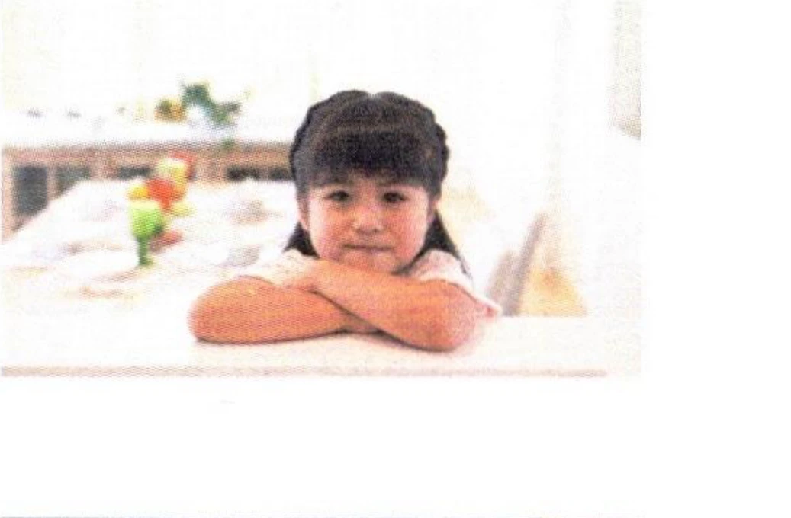
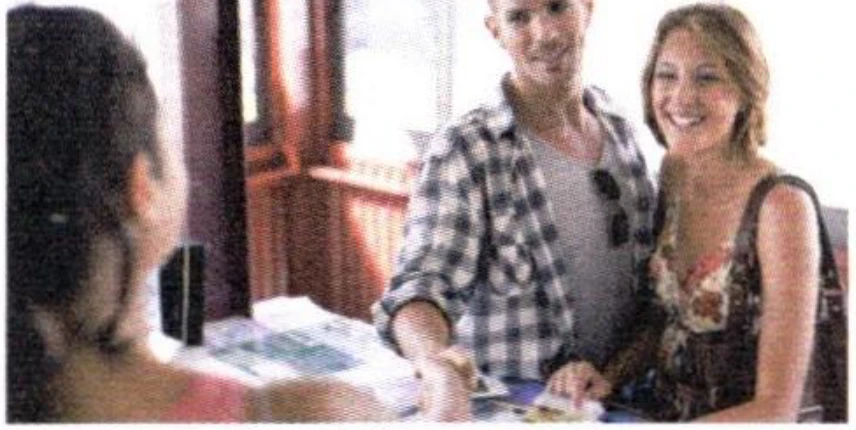
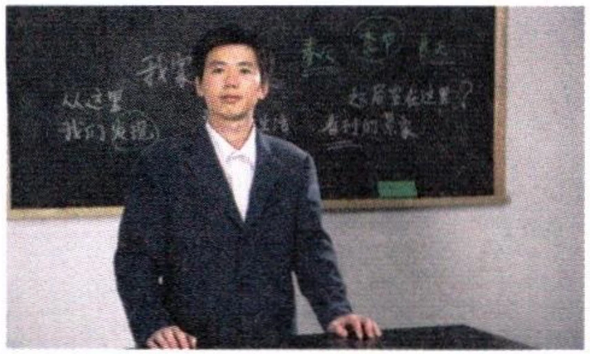

第二部分Part IIЧасть II
第4—5题：听问题，选择正确回答。每题听两次。Questions 4-5: Listen to each question and choose the correct answer. Each question will be played twice.Вопросы 4-5: Прослушайте каждый вопрос и выберите правильный ответ. Каждый вопрос будет проигран дважды.
Jīntiān tiānqì zěnmeyàng?例如： 今天 天气 怎么样？
How is the weather today?Какая сегодня погода?fēicháng rèvery hotочень жарко
hěn hǎotīngsounds beautifulзвучит красиво
zài hē shuǐdrinking waterпьет воду
4.
shí rénten peopleдесять человек
gètwenty itemsдвадцать штук
sān kǒu rénthree family membersтри члена семьи
5.
dàbigбольшой
suìtwelve years oldдвенадцать лет
liǎngqiāntwo thousandдве тысячи
第三部分Part IIIЧасть III
第6—8题：听对话，选择最匹配的图片。每题听两次。Questions 6-8: Listen to each dialogue and choose the correct picture. Each dialogue will be played twice.Вопросы 6-8: Прослушайте каждый диалог и выберите наиболее подходящую картинку. Каждый диалог будет проигран дважды.
A
B

C

D
